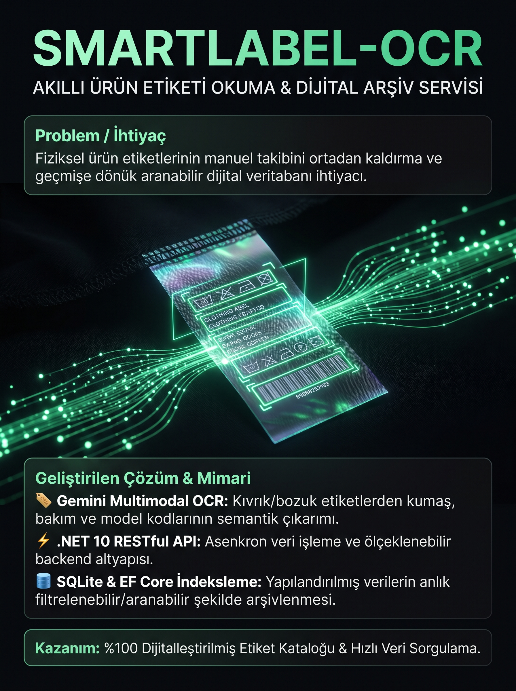

Akıllı Ürün Etiketi Okuma ve Arama Servisi
Fiziksel ürün etiketlerindeki kumaş karışımı, yıkama/bakım sembolleri ve model bilgilerini Google Gemini AI ile ayrıştırıp aranabilir kılan kurumsal backend servisi.
Kıvrık, bozuk açılı ve düşük ışıklı etiket fotoğraflarından semantik metin ve veri çıkarımı.
Asenkron mimari, Repository Pattern ve Entity Framework Core ile yüksek performanslı servis altyapısı.
Çıkarılan etiket verilerinin yapılandırılmış JSON/Entity formatında arşivlenmesi ve hızlı sorgulanması.
Kumaş karışımı, model numarası veya bakım talimatlarına göre anlık filtreleme ve arama desteği.
Ürün etiket fotoğrafı REST API üzerinden sisteme yüklenir.
Google Gemini modeli kumaş oranlarını, yıkama derecelerini ve ürün kodunu ayrıştırır.
Veriler SQLite üzerine kaydedilerek geçmişe dönük anında aranabilir hale getirilir.

Proje Tanıtım Panosu
SmartLabel-OCR projesinin tüm backend mimarisini, endpoint modellerini ve veritabanı konfigürasyonlarını GitHub üzerinden inceleyebilirsiniz.
GITHUB'DA GÖRÜNTÜLE